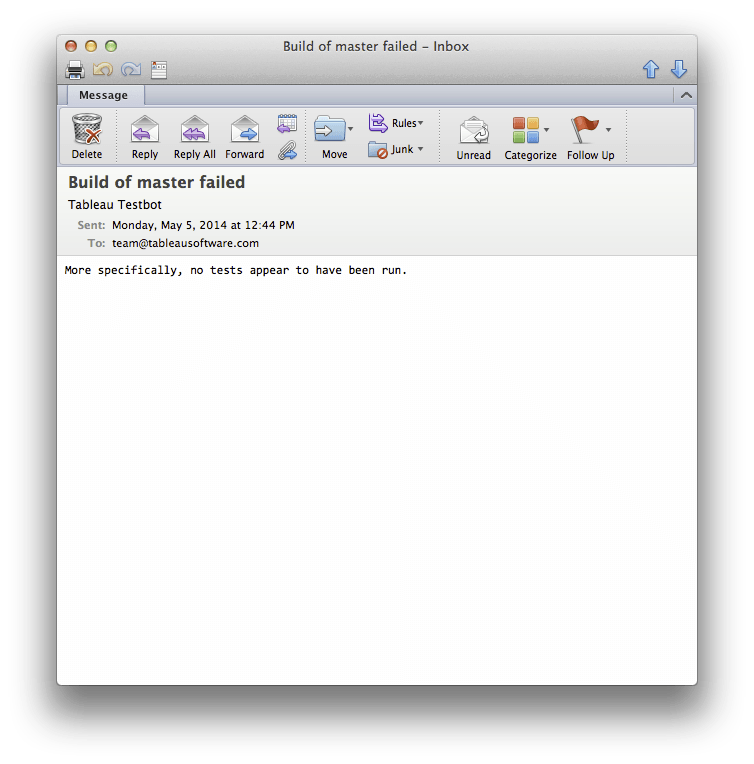
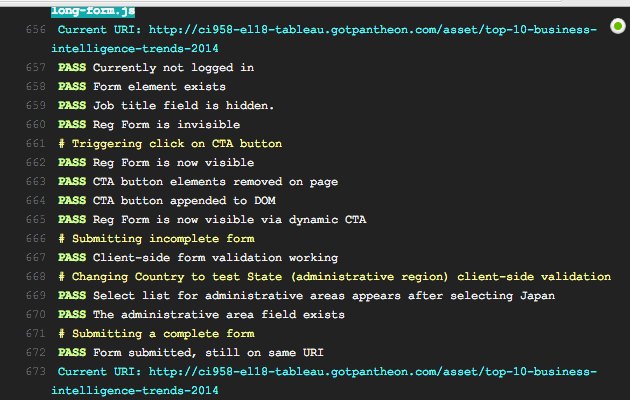
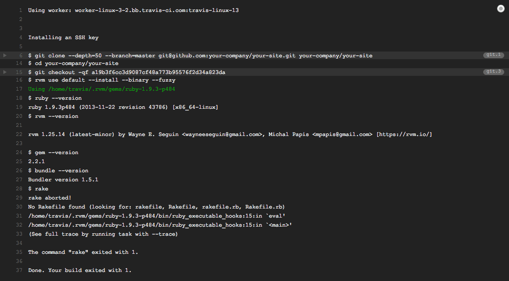

Tableau Software
Our story: the dark ages
- Integrations happened only nightly against a single code branch
- Built on servers whose configurations did not match production
- In a mess of undocumented bash scripts running on unmonitored servers
- 
Our story: a CI renaissance
- Integrations now happen on-demand on a clone of production
- New developers can more quickly and "safely" be on-boarded
- We can focus on building features, not maintaining a custom, cumbersome CI system
- 
Goals
By the end of this session, you'll have everything to start practicing CI on your Pantheon site. In particular you'll walk away with:
- An overview of CI, and how Pantheon makes it easier
- Requisite tools and services to get up and running
- A fully configured yaml file; just add credentials and tests!
- Tips and gotchas when working with specific test frameworks
A brief intro to CI
What, why, and how
What is continuous integration?
CI is a development practice whereby...
- Developers check-in code regularly
- Check-ins are built & verified automatically
- Developers are notified of the build's status
Why continuous integration?
- Detect and fix problems & regressions earlier
- Increase productivity & project velocity
- Gain confidence in your deployments
How does a typical CI workflow look?

Pantheon power tools
Multidev, Terminus/CLI, oh my!
Pantheon Multidev
Cloud dev environments for teams
- On-demand environment creation/destruction
- Environments match production configurations
- Workflow ops to easily sync content/assets
Problems solved by multidev...
- Local/development environment reconciliation
- Advanced git/dev/qa/review workflows
- "It worked on my machine"
Terminus: the Pantheon CLI
- Create new sites, spin up new multidev environments
- Trigger workflow ops: deployment, content sync
- Securely connect to mysql, redis, etc.
In practice, it might look something like this.
#!/bin/bash
PUUID='aaaaaaaa-1111-bbbb-2222-cccccccccccc'
PEMAIL='your-email@example.com'
PPASS='your-password-here'
drush pauth $PEMAIL --password=$PPASS
drush paliases
drush psite-clone $PUUID live test -y
CI Problems solved by Pantheon
- Pantheon + multidev means: no need to manage infrastructure, even for your "build" servers
- Completely managed environments mean no need to master configuration management
- Command line access to workflow ops mean no need to manage orchestration
Building our CI infrastructure
Travis CI, GitHub, Multidev, and Terminus
High-level architecture

Prerequisites
- A Pantheon site with multidev enabled [what]
- A Pantheon account with access to the site [how]
- This is in addition to your own Pantheon account
- You'll want to remember the e-mail/password for later
- A GitHub account (personal or organization will do)
- You also probably want a private repo for your site [what]
- A Travis CI account, linked to your GitHub account [how]
- The Travis CLI client [how]
Repository preparation
-
If you haven't already, clone your site from Pantheon
git clone ssh://codeserver.dev.etc@etc.drush.in:2222/~repository.git my-site
-
Add a .travis.yml file to the root of your codebase, and commit it
touch .travis.yml git add .travis.yml && git commit -m "Adding Travis config file."
- Enable builds for your repository in Travis
-
Add your private GitHub repo as a git remote, and push
git remote add github git@github.com:my-company/my-site.git git push github master
Your first build
After pushing, Travis probably attempted to build your project as a Ruby app, failed, and e-mailed you a notification, explaining as much.
Configuring Travis Builds
We need to teach Travis how to build our site/app in .travis.yml:
language: php php: 5.3 env: - PNAME='my-site' - PSITE='some-name' - PUUID='aaaaaaaa-1111-bbbb-2222-cccccccccccc' - PSOURCE='test' install: - composer global require drush/drush:6.2.0 before_script - drush psite-ecreate $PUUID $PSITE --source=$PSOURCE script: - drush @pantheon.$PNAME.$PSITE test-run MySimpleTestClass --strict=0 after_script: - drush psite-edelete $PUUID $PSITE -y
Build configuration deep-dive
Secure authentication & environment creation
Installing dependencies
Ensure all dependencies are available on the Travis build server.
install: # Ensure the build doesn't get hung up on adding unknown hosts. - echo "StrictHostKeyChecking no" > ~/.ssh/config # Install drush. - composer global require drush/drush:6.2.0 - export PATH="$HOME/.composer/vendor/bin:$PATH" # Install terminus. - git clone https://github.com/pantheon-systems/terminus.git $HOME/.drush/terminus - cd $HOME/.drush/terminus - composer update --no-dev - drush cc drush # Install additional test dependencies here (like Casper, Behat, etc).
Basic environment configuration
The following information is required to build your site/app.
language: php
php: 5.3
env:
global:
# That random string in the URL when accessing your site's dashboard
- PUUID='aaaaaaaa-0000-bbbb-1111-cccccccccccc'
# The site name (e.g. live-sitename.gotpantheon.com)
- PNAME='site-name'
# The environment from which DB/files will be cloned
- PSOURCE='test'
# The authentication details for a Pantheon account with access to the site
- PEMAIL='your-account@example.com'
- PPASS='your-account-password'
# The host against which the build will be run
- PHOST="https://$TRAVIS_BRANCH-$PNAME.gotpantheon.com"
Securing authentication details
Do not keep credentials in plain text in your repo, even if it's private!
-
Use the Travis CLI to encrypt those values [how]
travis encrypt "PEMAIL='your-account@example.com'"
-
Which will produce output like this:
secure: "22Yl4nERjtJPoinwa234"
-
Which should replace those values in your .travis.yml
env: global: # ...Trimmed for brevity... - secure: "22Yl4nERjtJPoinwa234Jbwi48Sj+02x" - secure: "9CQP5l3ufUCLyGtc+HhsVHB1gNJrTz14" - PHOST="https://$TRAVIS_BRANCH-$PNAME.gotpantheon.com"
Basic environment build strategy
Multidev environments are branch-based, but in this scenario, only GitHub and Travis know of the new code we're testing. Consequently, we'll need to push code from Travis' build server back up to Pantheon. To do so, you must do the following:
-
Generate a new, password-less SSH key [how]
-
Add a base64-encoded version of the private key to .travis.yml with key "source_key" [how], like this:
source_key: LRVktLS0tLQpNSUlFb1FJQkFBS0NBUUVBeG1Zd1JOZUZvcmhldFQ2
-
Which allows us to do stuff like this:
before_script: - git remote add p ssh://codeserver.dev.$PUUID@codeserver.dev.$PUUID.drush.in:2222/~/repository.git - git push p $TRAVIS_BRANCH
Corresponding to the multidev environment at travisbranch-sitename.gotpantheon.com
Preparing the build
In this phase, we create our Pantheon environment and get ready to run tests.
before_script: # Authenticate with Pantheon via Terminus. - drush pauth $PEMAIL --password=$PPASS # Add Pantheon as a git remote, push to it, and create the environment. - cd $TRAVIS_BUILD_DIR - git remote add pantheon ssh://codeserver.dev.$PUUID@codeserver.dev.$PUUID.drush.in:2222/~/repository.git - git push --force pantheon $TRAVIS_BRANCH - drush psite-ecreate $PUUID $TRAVIS_BRANCH --source=$PSOURCE || true # Update our drush aliases file. - drush paliases - drush cc drush # Note that all subsequent drush commands must be run out of our drupal root. - cd $HOME # We can test deployments by running drush updb. - drush @pantheon.$PNAME.$TRAVIS_BRANCH updb -y --strict=0 # Here, we can enable test dependencies, for example, SimpleTest. - drush @pantheon.$PNAME.$TRAVIS_BRANCH en simpletest -y --strict=0
Refining the build strategy
The build strategy described assumed only one build would occur per branch at any given time. In reality, this isn't flexible enough. Supporting it is easy:
-
Just add some random, unique bits to our environment name.
env: global: # Note, the total length of PSITE cannot exceed 11 characters (currently). - PSITE=$(cat /dev/urandom | tr -cd 'a-z0-9' | head -c 3) - PSITE="ci-$TRAVIS_BUILD_NUMBER-$PSITE" -
And use our site/environment name instead of the branch name.
before_script: - git push --force pantheon $PSITE - drush psite-ecreate $PUUID $PSITE --source=$PSOURCE || true - drush @pantheon.$PNAME.$PSITE updb -y --strict=0
-
Resulting in tests being run against a URL like the following:
https://ci-123-mysite.gotpantheon.com
Running tests
The easiest part of the whole experience is running tests, it's up to you to write and maintain tests that adequately cover your app/site's use-cases.
script: # What you put here depends entirely on what tests and testing frameworks you use! # All that matters: failed tests must return status code 1, otherwise return 0. # As an example; running a single SimpleTest class: - drush @pantheon.$PNAME.$PSITE test-run MyTestClass --strict=0
Cleaning up the build
After tests are done, regardless of build status, we should clean up our site on Pantheon.
after_script: # Destroy the Pantheon environment - drush psite-edelete $PUUID $PSITE -y # Delete the git branch we created. - cd $TRAVIS_BUILD_DIR - git push pantheon :$PSITE
Putting it all together (1/2)
language: php
php: 5.3
source_key: "base64_ssh_key_with_github_pantheon_access_here"
env:
global:
- PUUID='aaaaaaaa-0000-bbbb-1111-cccccccccccc'
- PNAME='site-name'
- PSOURCE='test'
- secure: "encrypted_email_value_here"
- secure: "encrypted_password_value_here"
- PSITE=$(cat /dev/urandom | tr -cd 'a-z0-9' | head -c 4)
- PSITE="ci$TRAVIS_BUILD_NUMBER-$PSITE"
- PHOST="https://$PSITE-$PNAME.gotpantheon.com"
install:
- echo "StrictHostKeyChecking no" > ~/.ssh/config
- composer global require drush/drush:6.2.0
- export PATH="$HOME/.composer/vendor/bin:$PATH"
- git clone https://github.com/pantheon-systems/terminus.git $HOME/.drush/terminus
- cd $HOME/.drush/terminus
- composer update --no-dev
- drush cc drush
# Install additional test dependencies here (like Casper, Behat, etc).
Putting it all together (2/2)
before_script: - drush pauth $PEMAIL --password=$PPASS - cd $TRAVIS_BUILD_DIR - git checkout -b $PSITE - git remote add pantheon ssh://codeserver.dev.$PUUID@codeserver.dev.$PUUID.drush.in:2222/~/repository.git - git push --force pantheon $PSITE - drush psite-ecreate $PUUID $PSITE --source=$PSOURCE || true - drush paliases - drush cc drush - cd $HOME - drush @pantheon.$PNAME.$PSITE updb -y --strict=0 - drush @pantheon.$PNAME.$PSITE en simpletest -y --strict=0 - drush @pantheon.$PNAME.$PSITE vset -y simpletest_verbose 0 --strict=0 script: # Run real / additional tests here. - drush @pantheon.$PNAME.$PSITE test-run MyTestClass --strict=0 after_script: - drush psite-edelete $PUUID $PSITE -y - cd $TRAVIS_BUILD_DIR - git push pantheon :$PSITE
BDD tips and gotchas
Working with CasperJS, Behat, and SimpleTest
CasperJS
CasperJS is a navigation scripting and testing utility built on top of PhantomJS (a headless browser).
Strengths
- PhantomJS comes pre-installed on all Travis build servers
- Intuitive and familiar to front-end developers
- Relatively easy to test complex client-side interactions
Weaknesses
- Very little "framework" to speak of
- Tests lack browser engine portability
- Limited to a "blackbox" approach to testing
Writing CasperJS tests for Pantheon
- Keep a directory of Casper test files somewhere like
private/tests/casper
// For example: private/tests/casper/setup.js
var _ROOT = casper.cli.get('host');
casper.echo('Setting global variables');
casper.echo('URI Root: ' + _ROOT);
casper.test.done();
// For example: private/tests/casper/test-trial-lp.js
casper.test.begin('Reg Form: Trial LP', function suite(tester) {
casper.start(_ROOT + _URI['landing-trial'], function() {
tester.assertExists('#user-register-form', 'Reg Form element exists');
tester.assertNotVisible('#user-register-form', 'Reg Form is invisible');
tester.assertExists('.cta a', 'CTA button elements exist');
});
casper.then(function() {
this.click('.cta a');
tester.assertVisible('#user-register-form', 'Reg Form is now visible');
});
casper.run(function() {
tester.done();
});
});
Preparing CasperJS for the build
Stash convenience vars; install casper
env:
global:
- CHOST="https://$PSITE-$PNAME.gotpantheon.com"
- CTESTDIR=$TRAVIS_BUILD_DIR/private/tests/casper
install: - git clone https://github.com/n1k0/casperjs.git $HOME/casperjs - cd $HOME/casperjs - git checkout tags/1.1-beta3 - export PATH=$PATH:`pwd`/bin
It's also possible to stash casper within your repository; adds weight to your repo, but syncs up your team / speeds up the build.
Running CasperJS tests
Once set up, running CasperJS is as simple as this line in the "script" phase.
script: - casperjs test --pre=$CTESTDIR/setup.js --host=$CHOST $CTESTDIR --fail-fast
One minor annoyance: older versions of CasperJS would not exit correctly unless passed the --fail-fast flag.
Behat
Behat is a BDD framework written in PHP.
Strengths
- Highly portable tests via pluggable web drivers
- Excellent Drupal extension allows going beyond "blackbox" testing
- Test writing is approachable by non-technical stakeholders
Weaknesses
- Many limitations and subtleties when going beyond the "blackbox" approach
- It's really easy to bog down your build with many slow tests
Preparing Travis to run Behat
Behat is installed via composer; strategies abound! the gist: composer.json file goes somewhere. Install it.
env:
global:
- BPATH=$TRAVIS_BUILD_DIR/private/tests/behat
install:
- cd $BPATH
- composer install --prefer-dist --dev
Don't worry about Travis when configuring Behat in your behat.yml. Make it work locally, use the drush driver for everything and configure an alias (self for local).
default:
paths:
features: 'features'
extensions:
Behat\MinkExtension\Extension:
base_url: http://mysite.local/
Drupal\DrupalExtension\Extension:
api_driver: 'drush'
drush:
alias: self
Preparing Behat for the build
A few gotchas when preparing Behat during the build process
- Aliased drush calls from 6.x to 5.x are problematic: append --strict=0 everywhere.
- Your behat.yml is configured for your local. Point it at Pantheon.
before_script:
# ...
- drush psite-ecreate $PUUID $PSITE --source=$PSOURCE || true
- drush paliases
- echo "\$aliases['$PNAME.$PSITE'] = \$aliases['$PNAME.$PSITE'] + array('strict' => '0');" >> \
$HOME/.drush/pantheon.aliases.drushrc.php
- drush cc drush
- sed -i -e "s,http://mysite.local,$PHOST,g" $BPATH/behat.yml
- sed -i -e "s, self, pantheon.$PNAME.$PSITE,g" $BPATH/behat.yml
Running Behat tests
Running tests is simple; just make sure you run behat from outside the Drupal root.
before_script: - cd $HOME script: - $BPATH/bin/behat --verbose --config $BPATH/behat.yml $BPATH/features
Why? The drush driver runs drush from where behat was run. Some drush 6.x to 5.x aliased commands do not work when run from a drupal root, so get out of it.
SimpleTest
SimpleTest is an (outdated) unit and behavior testing framework for PHP. It's how Drupal core and contrib runs most tests on drupal.org.
Strengths
- Very deeply integrated with Drupal
- Simple to install and run tests
Weaknesses
- Tests lack portability
- Test writing and debugging can be difficult and unintuitive
- There's usually a better tool for the job
Writing SimpleTest tests for Pantheon
Normally, SimpleTest tests are run against fresh installs using a multisite-like hack. But you can force your tests to use the original site and database by skipping most of the setup steps.
class YourTestClass extends DrupalWebTestCase {
/**
* Override the setUp() method and force SimpleTest into using the existing
* database instead of setting up a dummy.
*/
public function setUp() {
$this->setup = TRUE;
$this->public_files_directory = $this->originalFileDirectory .
'/simpletest/' . substr($this->databasePrefix, 10);
}
}
Preparing SimpleTest for the build
SimpleTest may be the simplest to prepare.
before_script: - drush @pantheon.$PNAME.$PSITE en simpletest -y --strict=0 - drush @pantheon.$PNAME.$PSITE vset -y simpletest_verbose 0 --strict=0
Note, you'll want to disable verbosity; Pantheon will sometimes fail to write the verbose HTML file, causing an undue build error
Running SimpleTest tests
The only caveat when running SimpleTest tests is that you should break out each class into its own test-run call. Drush will return non-standard exit codes if you run more than one class per command.
script: - drush @pantheon.$PNAME.$PSITE test-run MyTestClass --strict=0 - drush @pantheon.$PNAME.$PSITE test-run AnotherTestClass --strict=0
Just scratching the surface
There are so many things beyond BDD that CI allows you to do in a fully integrated, automated way...
- You could lint your code and throw warnings
- You could do static code analysis
- You could send notifications directly into your team chat room
- You could deploy changes to production
Thanks & discussion
btw: I go by iamEAP and frequent #pantheon IRC